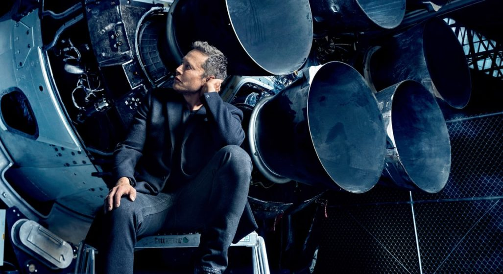

Elon Reeve Musk
The wealthiest person in the world

Elon Musk is one of the great entrepreneurial and co-founder of
PayPal (PYPL) and
Tesla (TSLA) as well as the founder of SpaceX, Neuralink...
The Time-line Of Future Visioner Elon Musk
- 1989 - Musk arrived in Canada and lived with a second-cousin in Saskatchewan for a year working odd jobs at a farm and lumber-mill.
- 1994 - Musk held two internships in Silicon Valley during the summer: at energy storage startup Pinnacle Research Institute.
- 1995 - Musk, Kimbal, and Greg Kouri founded web software company Zip2 with funds from angel investors.
- 1999 - Musk co-founded X.com, an online financial services and e-mail payment company.
- 2001 - Musk explains the planned capabilities of SpaceX Starship to NORAD and Air Force Space Command in 2019.
- 2003 - Musk had long been interested in the possibilities of electric cars, and in 2004 he became one of the major funders of Tesla Motors (later renamed Tesla), an electric car company.
- 2003 - Tesla Motors was incorporated in July 2003 by Martin Eberhard and Marc Tarpenning, who financed the company until the Series A round of funding.
- 2006 - Musk provided the initial concept and financial capital for SolarCity, which his cousins Lyndon and Peter Rive co-founded.
- 2016 - Musk co-founded Neuralink, a neurotechnology startup company to integrate the human brain with artificial intelligence (AI) .
- 2016 - Musk founded The Boring Company to construct tunnels.
Failure Is Not The Opposite Of Success, It is Part Of Success.
---Dr.Apj Abdul Kalam
If Your more interested to know one of the successfull Dream achiever visit the site Elon_Musk wikipedia Entry